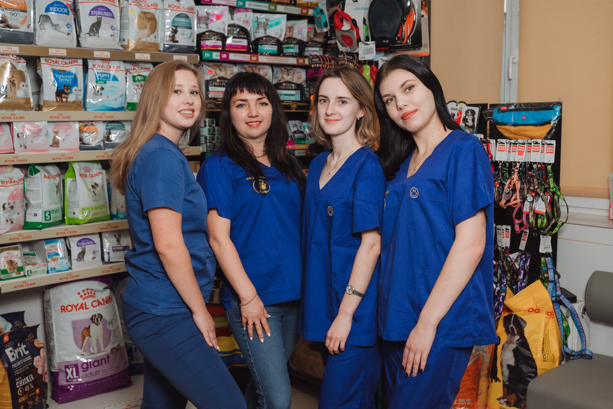
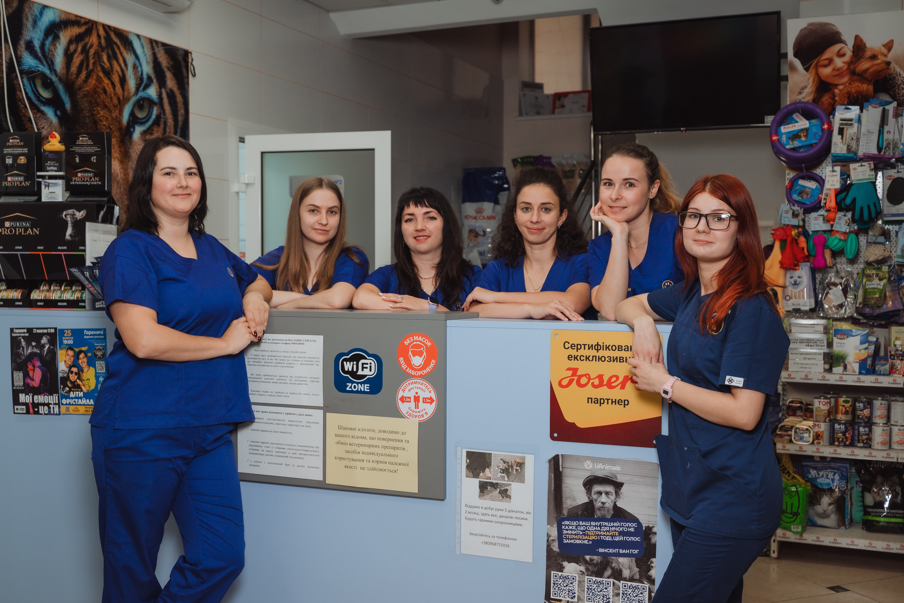
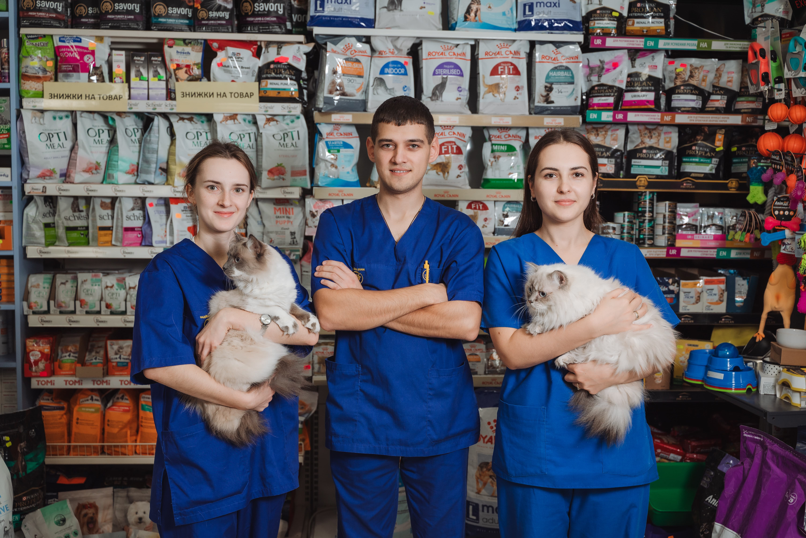

Ми розуміємо, що ваші домашні улюбленці — частина вашої сім'ї. Саме тому команда нашої клініки працює з повною віддачею, аби забезпечити їм довге та здорове життя
Наші цінності:
- 💙 Професійність — ми постійно вдосконалюємо свої знання та вміння.💙
- 💚 Дбайливий підхід — кожен улюбленець отримує особливу увагу.💚
- 💛 Чесність — відкрито інформуємо про всі методи лікування та процедури.💛
- ❤️ Надійність — ваша довіра є для нас найбільшою нагородою.❤️
-
Усе почалося 11 вересня 2011 року в самому серці села Гореничі.
Тут, за адресою Центр, 20, ми з великим прагненням відкрили маленьку ветеринарну допомогу. Це був наш перший крок на шляху до великої місії — допомагати кожній тварині, яка потребувала підтримки.
Наша невелика команда ветеринарів і техніків працювала з повною віддачею, вкладаючи душу і серце в кожного чотирилапого пацієнта, і швидко здобула довіру місцевих мешканців.
П’ять років безцінного досвіду та глибокого розуміння потреб наших пацієнтів показали нам, що ми здатні на більше.
І тому 4 листопада 2016 року народилася клініка "Надійні руки" — велика і сучасна, на площі 300 квадратних метрів, оснащена новітнім обладнанням. Тут наша мрія стала реальністю: простір, де кожен пухнастий, хвостатий чи пернатий друг отримує якісну, всебічну ветеринарну допомогу. -

- 
- 
- 
Наша команда
-
Сьогодні "Надійні руки" — це клініка професіоналів, де працюють висококваліфіковані фахівці, готові стати підтримкою для кожного власника тварини. Ми розуміємо, що ваші улюбленці — це частинка вашої родини, і тому завжди прагнемо дбати про них із любов'ю та відданістю. Дякуємо за вашу довіру — завдяки вам ми маємо можливість рости, вдосконалюватися і щодня стаємо кращими!